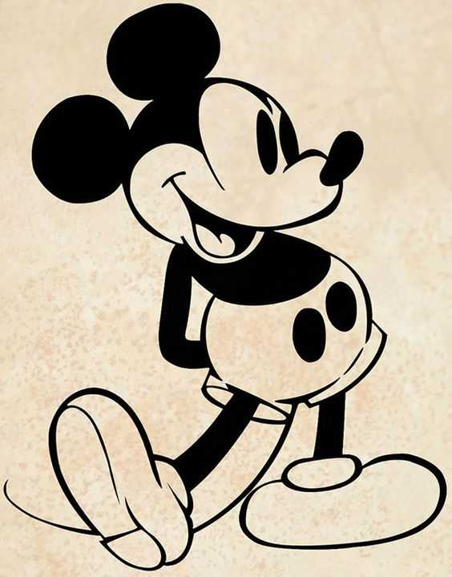

<!DOCTYPE html>
<html lang="en">
<head>
  <meta charset="UTF-8">
  <meta name="viewport" content="width=device-width, initial-scale=1.0">
  <meta http-equiv="X-UA-Compatible" content="ie=edge">
  <title>Мой первый сайт</title>
  <link href="style.css" type="text/css" rel="stylesheet"/>
  
</head>

</html>
		
	 <body>
      <main>
  <div class="bg">    
      <div class="column">
         
         Ми́кки Ма́ус, или Микки-Маус (англ. Mickey Mouse «Мышонок Микки») — мультипликационный персонаж, один из символов компании The Walt Disney Company и американской поп-культуры в целом. Представляет собой антропоморфного мышонка.
          Данные о дне рождения не вполне однозначны. Официально днём рождения Микки считается 18 ноября 1928 года. Именно в этот день показали миру мультфильм «Пароходик Вилли». Хотя впервые кинозрители познакомились с Микки ещё за 183 дня (15 мая), когда вышел небольшой немой мультфильм «Безумный самолёт».
          Говорит высоким и тонким голосом.
          Говорит высоким и тонким голосом. До 1947 года Уолт Дисней лично озвучивал Микки Мауса, из-за хронического кашля вследствие курения был вынужден прекратить озвучку. Тогда компания Дисней поручила эту работу Джимми Макдональду. С 1977 по 2009 Микки Мауса озвучивал Уэйн Оллвайн.
          Часто появляется в компании друга Дональда и собаки по кличке Плуто. Кроме того, у Микки есть подружка по имени Минни, его младший брат Морти и агрессивные и озорные племянники Майкл и Майло Филдмаус. Микки Маус фигурирует в мультфильмах, комиксах, видеоиграх и развлекательных парках.
        </div>
  
      </div>
        <div class="block1">
          <div class="round"></div>
          <div class="square"></div>
   
      <div>
        <div class="round"></div>
        <div class="square"></div>
      </div>
    </div>

    <div div class="block2">
        
        
        
        
        
  </div>
    
<did class="z-index">
    <div>1</div>
</div>
  </main>
		
	</body>
</html>